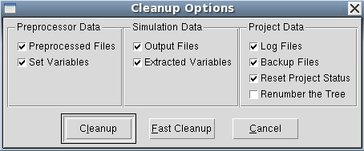
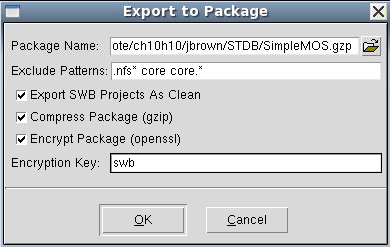
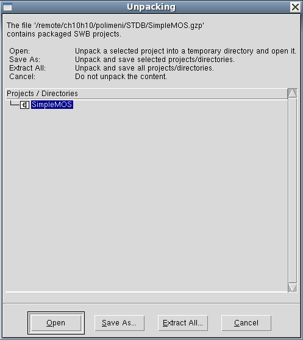
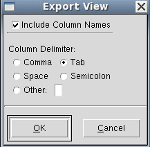
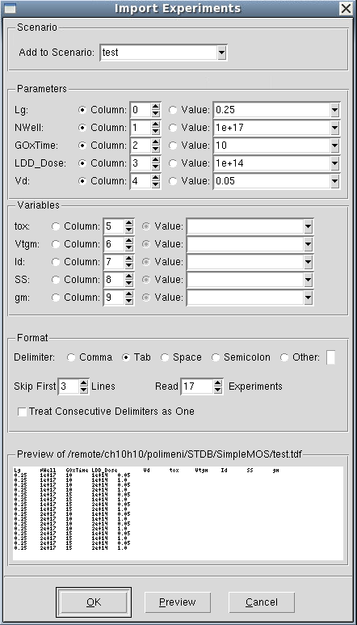
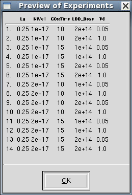
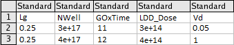

Sentaurus Workbench
6. Managing Projects
6.1 Cleaning Up Project Directories
6.2 Packaging Projects
6.3 Deleting Projects
6.4 Opening a UNIX Terminal Window
6.5 Using the Command Line
6.6 Exporting and Importing Scenarios
Objectives
- To become familiar with features to manage projects in Sentaurus Workbench.
6.1 Cleaning Up Project Directories
To clean up a project:
- Choose Project > Operations > Clean Up,
or press Ctrl+L.
The Cleanup Options dialog box opens. - Select the items to be removed.

- Click Cleanup.
Sentaurus Workbench deletes all files associated with the previous run, and the project is now ready to be rerun. This is indicated by a change in the color of the nodes from yellow (done) to white (none).
In the case of traditional project organization, if you select only Renumber the Tree, then all the simulation results will be deleted during node renumbering.
6.2 Packaging Projects
Sentaurus Workbench projects can be packaged, that is, they can be copied and compressed for later use. For example, project packages can be easily exchanged and sent by email.
To package the project SimpleMOS:
- Choose Project > Export.
The Export to Package dialog box opens. - Select the options as shown here.

- Click OK.
The project is first cleaned up (see Section 6.1 Cleaning Up Project Directories), and all files are copied and compressed into the SimpleMOS.gzp file. Moreover, the .gzp file is encrypted so that it can go through email filters.
To import a project package:
- Choose Project > Import.
The Unpacking dialog box opens. - Click Extract All.

- Select the folder where to import the project.
- Click OK.
If an encryption key different from the default one (swb) is used when exporting a project, then you will be required to enter this key when importing the project.
In addition, projects can be saved by choosing Project > Save As > Clean Project, which cleans up the project before it is saved in an uncompressed format.
6.3 Deleting Projects
To delete a project:
- Select the project in the projects browser.
- Right-click and choose Delete.
- In the confirmation dialog box, click Yes.
6.4 Opening a UNIX Terminal Window
It can be convenient to access the contents of the current project directory from the command line. In Sentaurus Workbench, you can open an Xterm, which can be used like any other UNIX terminal window.
To open a UNIX terminal, choose Extensions > Command Prompt Here or click the toolbar button. A new UNIX terminal window opens in the project directory. If a node was selected, then the terminal window opens in the output directory of the node.
6.5 Using the Command Line
All interactive operations associated with running a project can be accomplished using the command line. The following commands are available for:
- Submitting jobs: gsub and gjob
- Preprocessing: spp
- Cleaning up project directories: gcleanup
For more information about the commands that can be executed from the command line, see the Sentaurus™ Workbench User Guide or use the command:
> <command> -h[elp]
For example:
> gsub -verbose -e all -q local:priority <full_path_to_project>
6.6 Exporting and Importing Scenarios
Scenarios are sets of parameters and variables visible on the Project tab. They can be exported to a file for use with spreadsheet applications or external editors. In addition, scenarios defined in a text editor can be imported into Sentaurus Workbench.
For example, to export a scenario from the project SimpleMOS:
- Choose Experiments > Export > Text File.
The Export View dialog box opens. - Select Tab as the column delimiter.

- Click OK.
- In the Export As dialog box, select Tab delimited (*.tdf) for Files of type, and type a file name (for example, test.tdf). The scenario is exported to a file.
To read from this file:
- Choose Experiments > Import From File.
The Import Text File dialog box opens. - Select Tab delimited (*.tdf) for Files of type, select the file test.tdf, and click Open.
The Import Experiments dialog box opens. - Since the column count starts from 0, NWell and GOxTime form columns 2 and 3, respectively.
Make the changes as shown here, and set Skip First Lines to 3 to omit the text and header information.

- Click Preview to access all the information about the experiments.
The Preview of Experiments dialog box opens.

Now, you will read the first eight experiments as follows:
- In the Import Experiments dialog box, set Read Experiments to 8, and type the name of a new scenario called test1 in the Add to Scenario field.
- Click OK.
The eight experiments are read into the new scenario test1 and are displayed on the Project tab.
To create a scenario using an external text editor and to import it into Sentaurus Workbench:
- Create a table as shown here.

- Save it in comma-delimited or tab-delimited format.
- Import the file.
Copyright © 2022 Synopsys, Inc. All rights reserved.